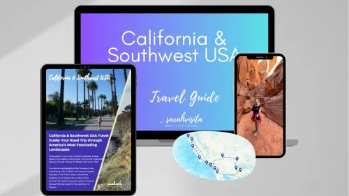

MADEIRA BY BUS - Interactive Travel Guide For Madeira
Product profile · Marketplace data 2026-10-13 · Sales-page research 2026-10-13 · Categories: Travel & Culture
- MADEIRA BY BUS - Interactive Travel Guide For Madeira is a e-books in Travel & Culture sold through the Digistore24 marketplace by vendor madeira-bus, listed since 2024-09-18.
- List price $21.18; Digistore24 reports a 25% affiliate commission, 2% cart conversion and a 0% cancel rate for this offer.
- Affiliate earnings per sale: $4.82 (vendor-side statistic, not a forecast).
Interested in MADEIRA BY BUS - Interactive Travel Guide For Madeira? The current price, bonuses and guarantee terms live on the vendor's official page:
Check the official sales page
Affiliate link — we may earn a commission at no extra cost to you.
Marketplace record
| Product type | E-books |
|---|---|
| Price | $21.18 (Single payment) |
| Affiliate commission | 25% |
| Refund window | Per the vendor's sales page — check the official page before buying |
| Vendor | madeira-bus (listed since 2024-09-18) |
| Marketplace stats* | Cart conversion 2% · cancel rate 0% · affiliate earnings/sale $4.82 |
* Vendor-side marketplace statistics reported by Digistore24; they depend on traffic quality and are not a forecast.
Vendor's marketplace description
Revolutionary Travel Guide: 'MADEIRA BY BUS' Simplifies and Promotes Sustainable Bus Travel on Madeira Madeira is renowned for its breathtaking landscapes, charming villages, and rich history. However, exploring the island without a rental car can be challenging, as understanding the public transportation system often proves difficult. Enter the new travel guide “Madeira by Bus” , offering an innovative solution for eco-conscious travelers looking to discover the island stress-free and at their own pace. A Unique Concept for Hassle-Free Travel MADEIRA BY BUS is the first travel guide to combine Madeira’s top 24 destinations with detailed bus schedules. From historic towns like São Vicente and Santana to the famous lava pools in Porto Moniz, this guide shows travelers how to reach these dream locations using public transportation. Practical, Interactive, and Always Up-to-Date Featuring QR codes and interactive maps, “Madeira by Bus” provides direct access to real-time bus connections, event tips, and local highlights. Available both as a downloadable PDF and a printed book. Thanks to interactive features, the travel guide is always up to date and makes travel planning efficient and flexible. Sustainable and Authentic Using public transportation is not only environmentally friendly but also a way to experience Madeira like a local. Travelers can immerse themselves in the island’s stunning scenery and cultural gems without worrying about parking hassles or complicated bus schedules. Perfect for Tourists and Locals Alike MADEIRA BY BUS is designed for anyone seeking a stress-free and sustainable way to explore the island. Available in both German and English, the guide offers: Comprehensive Bus Schedules : Departure and return times for every route. Insider Tips for Activities : Suggestions for hikes, attractions, and local events. Interactive QR Codes (book) or Hyperlinks (PDF) : Direct access to maps and the latest information. About the Author Anita Fischer has lived on Madeira for over a decade and is dedicated to providing tourists with a sustainable and stress-free way to explore the island. Her travel guide “Madeira by Bus” is the result of years of research and personal experience.
From the vendor's sales page
Page title: Madeira by Bus Interactive Travel Guide & Timetable for 24 villages
Meta description: MADEIRA BY BUS - The Interactive Travel Guide with Up-to-Date Bus Timetables. Reach 24 Full-Day Excursion Destinations by Public Buses
Headline
MADEIRA BY BUS
Discover Madeira Stress-Free and Sustainable - Your Adventure Awaits!
Section headlines
- Reach 24 Dream Destinations by Public Bus
- - interactive, practical and authentic -
- For only 19,90 €
- this interactive guide
- is available to you 24/7
- Master your mobility on vacation with the MADEIRA BY BUS travel guide
- Testimonials for MADEIRA BY BUS:
Opening copy
Stunning destinations, charming places, and breathtaking views - all with ease by the island's public buses.
Enjoy your vacation without the stress of parking, complicated bus schedules, or expensive car rentals!
Available in PDF format or as a printed book with 24 full-day, experience-filled excursions; includes maximum stay times and activity tips on-site. Always up to date with the permanent publication of temporary or permanent changes on our website.
CTA buttons: “Yes, I want to read the book!” · “Yes, I want to download the PDF!”
Research method: raw HTML fetch · 1567 words on page · quality: rich · researched 2026-10-13. Full research file (MD) ↗
How products like this are delivered
General note about this product type (not vendor-specific instructions): E-books on Digistore24 are delivered as a digital download (usually PDF/EPUB): right after checkout you get a download link or member-area access, and can read on any device. For the exact usage of MADEIRA BY BUS - Interactive Travel Guide For Madeira, the official sales page and included materials are the authoritative source.
Good to know
- No guarantee language found in our research of the sales page — confirm the refund window on the official page before you buy.
- Marketplace figures (price, commission, conversion, cancel rate) — source: official Digistore24 marketplace API, affiliate view, snapshot 2026-10-13. Re-check: marketplace search for product ID 570969.
- Sales-page quotes & headline — source: https://madeira-by-bus.com/read/, fetched 2026-10-13 (method: raw HTML). Verify: open the official page.
- Guarantee / refund — set by the vendor; confirm on the sales page at purchase time.
- Not verified by us: product quality, outcomes, testimonials — no hands-on test has been performed for this listing.
Frequently asked questions about MADEIRA BY BUS - Interactive Travel Guide For Madeira
Answers compiled from the marketplace snapshot (2026-10-13) and vendor sales-page research (2026-10-13); vendor claims are labeled inline.
What is MADEIRA BY BUS - Interactive Travel Guide For Madeira?
MADEIRA BY BUS - Interactive Travel Guide For Madeira is a e-books sold through the Digistore24 marketplace by vendor madeira-bus, listed since 2024-09-18. It is filed under Travel & Culture. Digistore24 handles checkout, delivery and refunds for this product.
How much does MADEIRA BY BUS - Interactive Travel Guide For Madeira cost?
The Digistore24 marketplace lists it at $21.18 (single payment). Prices are set by the vendor and can change — the marketplace record above shows the snapshot; the official sales page shows the current price.
Is there a money-back guarantee for MADEIRA BY BUS - Interactive Travel Guide For Madeira?
Our sales-page research did not find explicit guarantee language. Many Digistore24 products carry a 60-day money-back guarantee, but this is set per product by the vendor — confirm on the official sales page before buying.
Is MADEIRA BY BUS - Interactive Travel Guide For Madeira legit?
We don't rate legitimacy — we publish verifiable data instead: vendor madeira-bus (listed on Digistore24 since 2024-09-18), cart conversion 2%, cancel rate 0%, affiliate earnings/sale $4.82 (all vendor-side marketplace statistics). Read our 6-point evaluation method and judge with the numbers — or join the discussion about MADEIRA BY BUS - Interactive Travel Guide For Madeira.
Where can I buy MADEIRA BY BUS - Interactive Travel Guide For Madeira safely?
Only through the official sales page linked on this site (checkout and refunds run via Digistore24). Verify the price and guarantee there before ordering. That link is an affiliate link — buying through it supports this site at no extra cost to you.
How do I get MADEIRA BY BUS - Interactive Travel Guide For Madeira after paying?
Checkout runs on Digistore24: after payment you receive your access or download by email and in your Digistore24 customer account. Delivery details for this product type: E-books on Digistore24 are delivered as a digital download (usually PDF/EPUB): right after checkout you get a download link or member-area access, and can read on any device. If anything fails, Digistore24 buyer support can recover your order.
All 50 buyer questions about Travel & Culture — the full category FAQ.
Discuss MADEIRA BY BUS - Interactive Travel Guide For Madeira on Reddit
Community threads are where real buyers compare notes. We link to communities, not to specific posts — threads move, subreddits stay:
- r/travel — community discussions that often touch travel & culture.
- Search Reddit for "MADEIRA BY BUS - Interactive Travel Guide For Madeira" — real-time results, we don't control them.
- Top "review" mentions this year — sort by top, filter by recency yourself.
Related shopping on Amazon
Physical products and gear commonly bought alongside MADEIRA BY BUS - Interactive Travel Guide For Madeira:
- Shop travel accessories on Amazon — top results, Amazon's ranking.
- Bestsellers in travel accessories — live Amazon list, we don't curate it.
Sponsored: as an Amazon Associate, DigistorePicks earns from qualifying purchases (tag adminstore05-20). Amazon sets its own prices and commissions (typically low single digits — far below Digistore24 vendors' 30–75%). We list Amazon as a convenience for physical goods; it is not an alternative to the digital product above.
Related offers in Travel & Culture
Complete, no-fluff nutrition and fitness system for travelers, operators, and executives. Field-tested protocols across 5 field guides + 2 free bonuses. Instant

ADVANTAGES FOR AFFILIATES - regular income (subscription model) - attractive language course concept that clearly stands out from other offers on the market: No

A reflective digital guide for individuals who feel disconnected or out of alignment in their daily life. This product supports users in: Understanding the sour

Recommend our popular scavenger hunt in this city and of course in many other cities (see other offers from Hint-Caching on the marketplace). During a Hint-Cach
Other offers by madeira-bus

“24 Menus from Madeira” – a beautiful cookbook for food lovers, travelers & fans of the island! Target audience: Madeira lovers, Portugal travelers, foodies
Same vendor on our German site
- 24 Menüs aus Madeira - eine kulinarische Reise — $20.68 (Food & Drink)
- Madeira by Bus - mit öffentlichen Bussen zu 24 Top-Zielen — $20.01 (Travel & Culture)
Same vendor, German-language marketplace listings.
Similar price range in Travel & Culture

Plan Trips, Earn Income: Your Step-by-Step Guide to Making Money as a Travel Planner Turn your love for travel into a profitable business — even from home! “Pla
“24 Menus from Madeira” – a beautiful cookbook for food lovers, travelers & fans of the island! Target audience: Madeira lovers, Portugal travelers, foodies

The California and Southwest USA Travel Guide (English) is a digital travel guide featuring fully structured and chronologically optimized daily itineraries des

The Mallorca Bucket List (English) is a curated collection of the most beautiful places, attractions and unique highlights of the destination, designed to inspi
Related searches
Where to check it out
Read the vendor's full sales page (current price, guarantee terms and bonuses are listed there):
View official sales page
That link is an affiliate link — if you buy through it we earn a commission from the vendor at no extra cost to you.
Sources & further information
- Official sales page (current price, guarantee, bonuses): www.madeira-by-bus.com/read (affiliate link)
- Public Digistore24 product page: digistore24.com/product/570969
- Full research file (Markdown, versioned): content/products/50900-madeira-by-bus-interactive-travel-guide-for-madeira.md
- Marketplace category: Travel & Culture
How we evaluate products like MADEIRA BY BUS - Interactive Travel Guide For Madeira
Six checks, all on official marketplace numbers — earnings/sale ÷ cancel-rate skepticism × funnel fit. Read the full evaluation method · our research standards & labeling.
Questions, or own experience with MADEIRA BY BUS - Interactive Travel Guide For Madeira?
We publish hands-on reviews only after buying a product ourselves — but your experience helps other readers: start or join the discussion about MADEIRA BY BUS - Interactive Travel Guide For Madeira on GitHub. Found a wrong number? Report a correction — every page shows its data dates, and corrections are applied to the whole site.